SAE BRASIL ELETROQUAD:
O PÓDIO DA
ENGENHARIA
Como a equipe GAIA Eletroquad desenvolveu um drone quadrotor autônomo e conquistou o 3º lugar do Brasil enfrentando desafios reais de integração de hardware e software.

O 3º lugar foi registrado pela UFTM em 24 de junho de 2025.
Um marco para o GAIA
A conquista do terceiro lugar na competição SAE Brasil Eletroquad, promovida em conjunto com a Eletrobras, é um marco histórico para a robótica na UFTM. Enfrentando equipes experientes de todo o país, o GAIA provou que a união entre pesquisa acadêmica meticulosa e engenharia prática é a chave para a inovação aeronáutica.
Este troféu é o reflexo de noites no laboratório, códigos debugados exaustivamente e um drone que nasceu de uma estrutura base para se tornar um dos sistemas aéreos autônomos mais eficientes do país.
Os dias de competição
Durante o evento, a pressão era constante. A competição exigia não apenas que o drone voasse, mas que operasse com autonomia, navegasse por coordenadas, reconhecesse alvos no solo e realizasse o acionamento de mecanismos, como a nossa garra mecânica, no tempo exato.
A estabilidade do sinal de telemetria e o ajuste fino do controle PID sob condições climáticas adversas foram os nossos maiores desafios em campo.
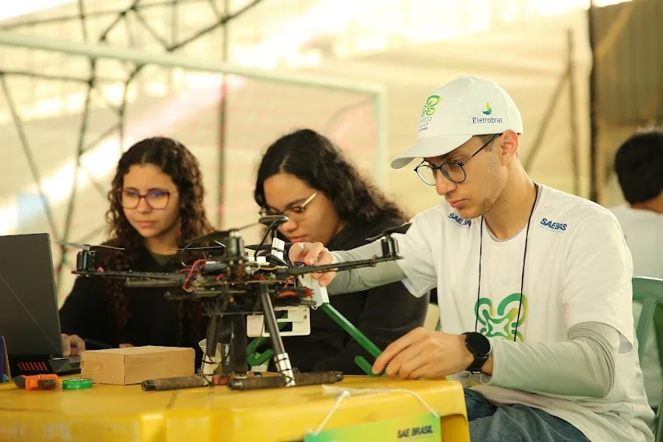
Ajuste fino de código e calibração de hardware momentos antes do voo oficial.


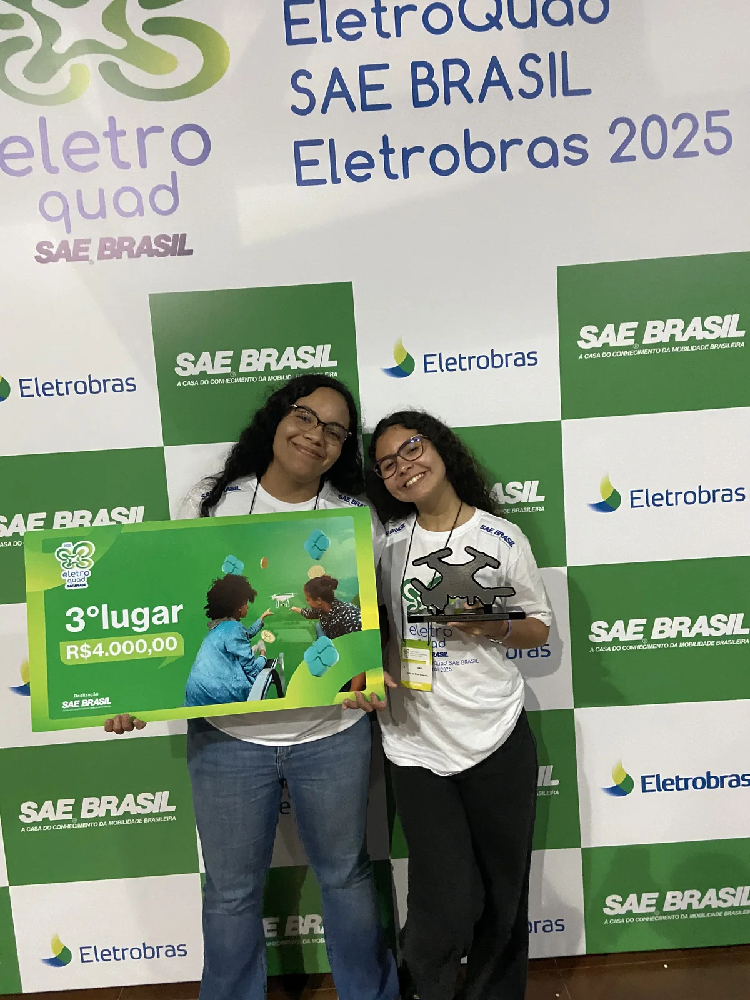
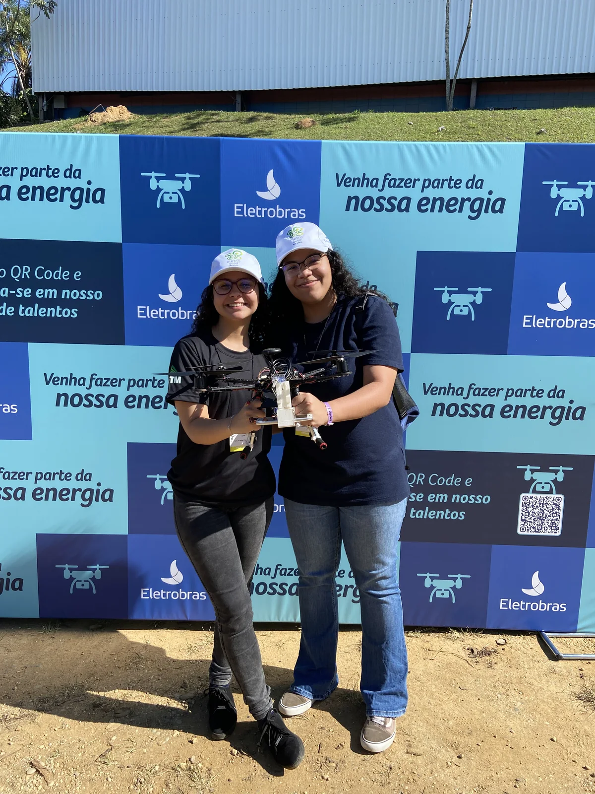
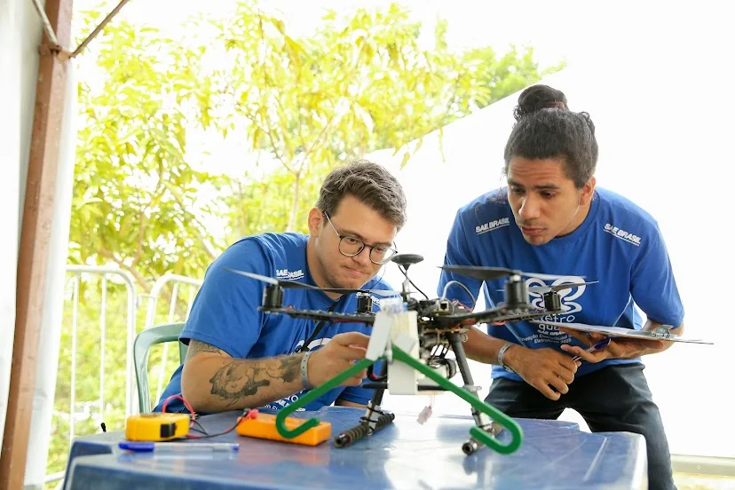
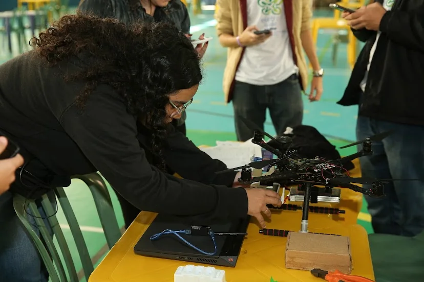
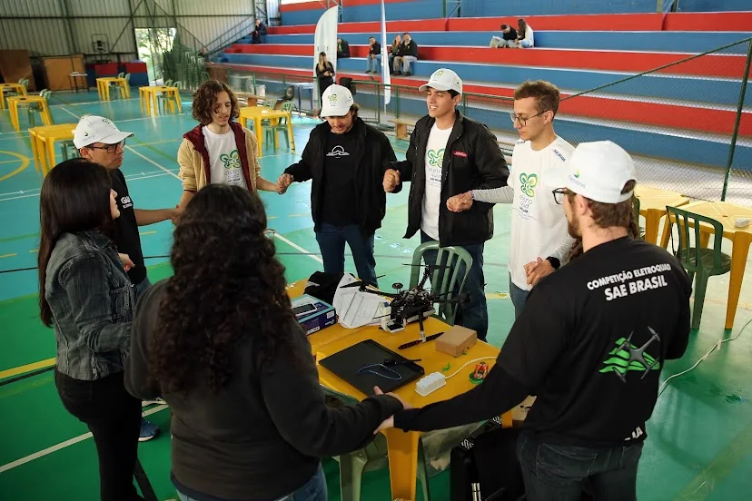
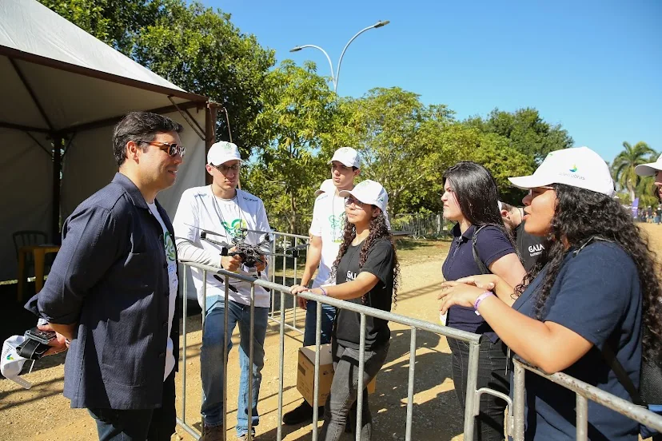
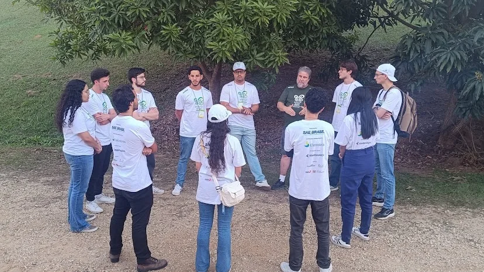
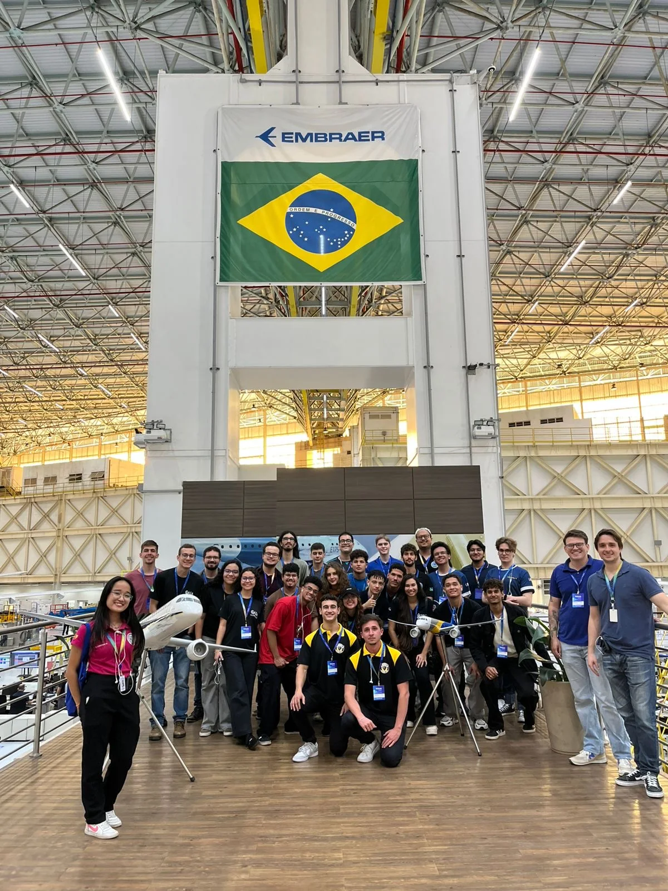
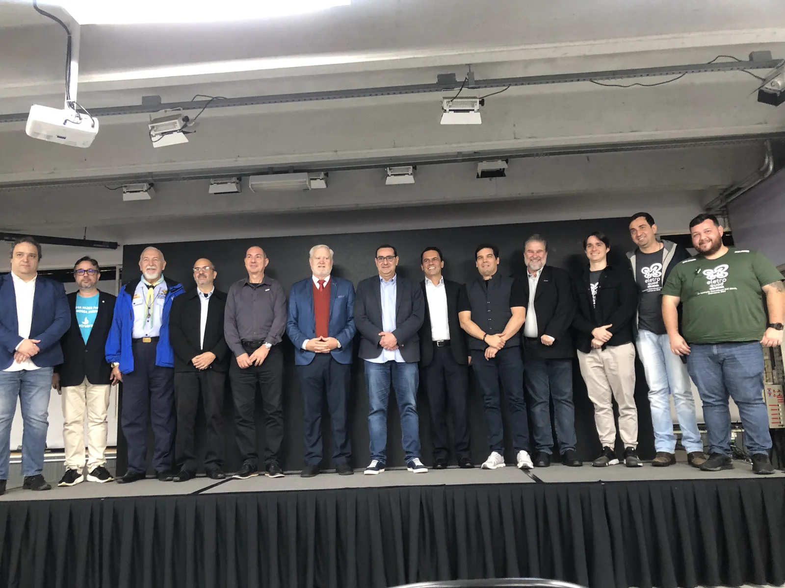
Raio-X do projeto técnico
O relatório técnico apresentado aos juízes detalhou a arquitetura do sistema e a integração entre estrutura, controle de voo, telemetria, visão computacional e atuação física.
O impacto do pódio
Essa vitória impulsiona o GAIA Robótica para um novo patamar dentro e fora da UFTM. Mostrou à comunidade acadêmica a capacidade da equipe de trabalhar com o estado da arte em sistemas de voo autônomo e abre portas para parcerias com indústrias do setor de inovação e agronegócio no Triângulo Mineiro.
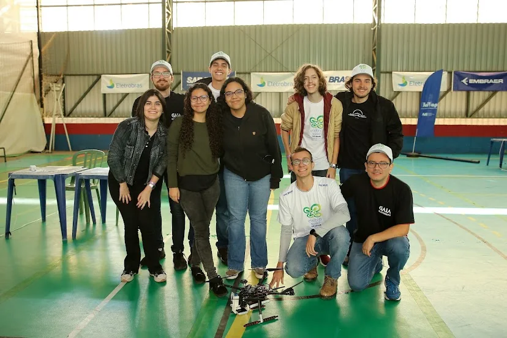
A equipe reunida: o motor humano por trás do projeto autônomo.
Sua empresa no próximo pódio nacional
Associe sua marca a uma equipe universitária focada em alta performance, engenharia aplicada e tecnologia de ponta.
Seja patrocinador →